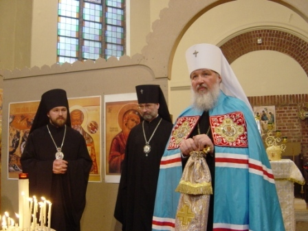

Wednesday, January the 28th, 2009
back to: title, date or indexes
Moderniser is favourite to lead Russian church, says the headline in today's Guardian. The online edition sadly does not include the photograph of dynamic thrusting modernist Metropolitan Kirill of Smolensk which appeared in the paper. But do not fret. I have found one, so readers' jaws can drop at the breathtaking modernity of the man they call “Metropolitan Kirill of Smolensk”. That's him on the right, in the oh so modern colourful robes, unlike the hopelessly passé figures next to him, who look positively mediaeval in their black garb. On the other hand, they might be beatniks, and it's Metropolitan Kirill of Smolensk who's behind the times, daddy-o.
